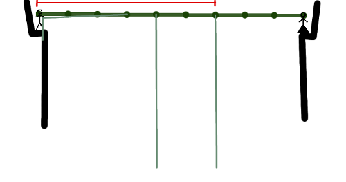
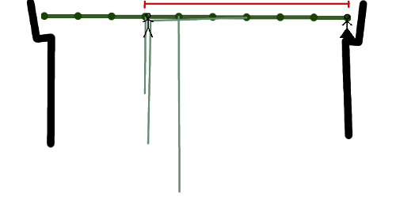

You are standing on a ledge in the jungle, and your one true love is standing on a similar ledge at the other side of a swamp infested with snakes, crocodiles and a variety of other unpleasant denizens. Fortunately, there is a number of vines hanging from the canopy of the jungle over the swamp, even more fortunately, you somehow managed to get hold of the first of these vines (see figures below). The canopy of the jungle is at a constant height, and both the ledges are at the same height as the canopy. The vines are simply lines hanging from the canopy at certain points, with differing lengths.
If you happened to be a fictional hero, you would just go swinging wildly and yelling, at some point let go of the vine you hold, fly in the air for some time, catch another vine, swing again, and after a few repetitions you would be holding your one true love in your arms. Unfortunately, you are not a fictional hero, and if you tried that, probably yelling would be the only part you would manage well.
Your plan is a bit more cautious. You will swing on the vine you hold, but instead of letting go, you will catch hold of another vine. Then you will slowly and carefully climb up your original vine, so that the new vine you are holding will become horizontal - either to its full length, or up to the distance between the two vines, whichever is smaller. Then you will rest for a bit, and swing again, to repeat the process. Note that you do not have to catch the first vine you come up against while swinging, you might prefer to swing a bit further and catch some further-off vine instead. You can also climb up the vine you're currently swinging back and forth on to reduce the distance between you and the root of the vine. In effect, this means that you can catch any vine that your vine crosses while swinging. Note that you will not climb down a vine while swinging.
One other thing that sets you apart from any fictional hero is that before you start the whole rather risky procedure you would like to know whether it is actually possible to reach the other side of the jungle this way. And this is the question you have to answer in this problem.
The first line of the input gives the number of test cases, T. T test cases follow. The first line of each test case contains the number N of vines. N lines describing the vines follow, each with a pair of integers di and li - the distance of the vine from your ledge, and the length of the vine, respectively. The last line of the test case contains the distance D to the ledge with your one true love. You start by holding the first vine in hand.
For each test case, output one line containing "Case #x: y", where x is the case number (starting from 1) and y is a YES or a NO. Indicating whether it is possible for you to reach your one true love, given the rules above.
Memory limit: 1GB.
Time limit: 40 seconds per test set.
0 < di, li, D ≤ 109.
T ≤ 30.
di < di+1.
As you hold the first vine, d0 ≤ l0.
dN-1 < D.
1 ≤ N ≤ 100.
1 ≤ N ≤ 10000.
There will be at most 60000 vines in all the test cases in total.
4 3 3 4 4 10 6 10 9 3 3 4 4 10 7 10 9 2 6 6 10 3 13 2 6 6 10 3 14
Case #1: YES Case #2: NO Case #3: YES Case #4: NO
In the first case, you hold the first vine 3 units away from where it is attached. You swing wildly, bypass the second vine and just barely catch the third. The picture below depicts the starting situation, and you are able to reach any vine that is rooted anywhere within the red interval:
After resting, you climb down the third one and up the first, to find yourself three units from the start, touching the canopy and holding the first and third vines. Now you let go of the first vine, swing again and again just barely reach the ledge, where your one true love awaits. The picture below depicts the situation after you caught the third vine and climbed over to the root of the first one. Again, you could reach any vine rooted within the red interval:
In the second case, you will not reach the third vine in the first swing, so your only choice is to catch the second. However, as it is attached four units from the start, you can (by going up the first vine) give yourself only one unit of swing - clearly too little to reach the third vine. Thus, you can't even reach the third vine, not to mention the other side of the swamp. Better go looking for some way around (or for a new true love).
In the third case, note that if you just swing on the first vine you hold, your path will not intersect the second vine - you have to climb up a bit while swinging (fortunately, you can) to reach the second vine. Remember, you can only climb up while swinging, you cannot climb down (because the vine going up is taut and you can put your weight on it, while the vine going down is swinging freely). In the fourth case, even though you can reach the second vine, it is too short to reach the final ledge.